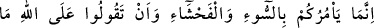
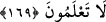
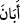
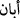

siz yalnız Allah’a kulluk ediyorsanız O’na şükredin.
173. Allah size ancak ölüyü (leşi) kanı, domuz etini ve Allah’dan başkası adına
kesileni haram kıldı. Her kim bunlardan yemeye mecbûr kalırsa, başkasının
hakkına saldırmadan ve haddi aşmadan bir miktar yemesinde günah yoktur. Şüphe
yok ki Allah çokça bağışlayan çokça esirgeyendir.
174. Allah’ın indirdiği kitaptan bir şeyi (âhır zaman Peygamberinin vasıflarını)
gizleyip onu az bir paha ile değişenler yok mu, işte onların yeyip de karınlarına
doldurdukları, ateşten başka bir şey değildir. Kıyâmet günü Allah ne kendileriyle
konuşur ve ne de onları temize çıkarır. Orada onlar için can yakıcı bir azâb vardır.
175. Onlar doğru yol karşılığında sapıklığı, mağfirete bedel olarak da azâbı satın
almış kimselerdir. Onlar ateşe karşı ne kadar dayanıklıdırlar!
176. O azâbın sebebi, Allah’ın kitabı hak olarak indirmiş olmasıdır. (Buna rağmen
farklı yorum yapıp) kitapta ayrılığa düşenler, elbette derin bir anlaşmazlığın içine
düşmüşlerdir.
Bu âyet, bazı yiyecek ve giyecekleri, kendi kendilerine haram kılan kimseler hakkında
nâzil olmuştur. Bu sebeple Allah Teâlâ onların ve bütün insanların, helâl ve güzel
şeyleri kendilerine yasaklamamalarını istemiştir.
Âyette geçen helâl, haramın zıddıdır. Tayyib de bütün şüphelerden uzak temiz
demektir. Ya da helâlden maksad şerîatın güzel gördüğü, tayyib’den maksad da insan
tabîatının hoş gördüğü şeylerdir. “Hatve”, adım atmak mânâsındadır. “Hutve” ise
yürüyen kişinin iki ayağı arasında kalan mesâfe demektir. Yâni siz şeytanın izini ve
yolunu takip etmeyin. Onun vesveselerine uymak sûretiyle helâl olanları haram, haram
olanları da helâl saymayın. Çünkü o apaçık bir düşmandır. Basîret sahiplerine göre
şeytanın düşmanlığı açıktır. Fakat nefsine tâbi olmuş basîretsiz kimselere göre ise o
sımsıcak bir dosttur. Çünkü onları, nefislerinin hoşlandığı ve lezzet alıp haz duyduğu
şeyleri yapmaya teşvik eder.
“Mübîn” “açık oldu, ortaya çıktı” mânâsına gelen (  ) fiilinden türetilmiştir. Vâhidî
bunun müteaddî olan (  ) fiilinden geldiğini savunup şöyle demektedir: O şeytan,
açıklanan bir düşmandır. Çünkü o babamız Âdem’e secde etmemek, yüz çevirmek ve
onu cennetten çıkartmak sûretiyle düşmanlığını ortaya koymuştur.
169. O size ancak kötülüğü, çirkini ve Allah hakkında bilmediğiniz şeyleri
söylemenizi emreder.